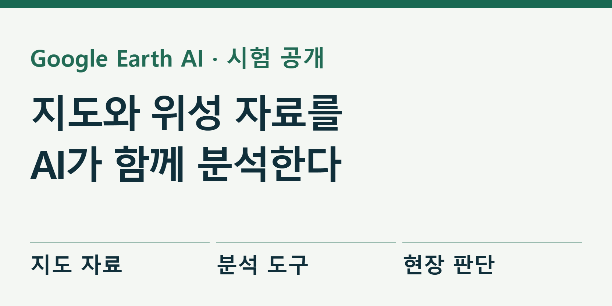
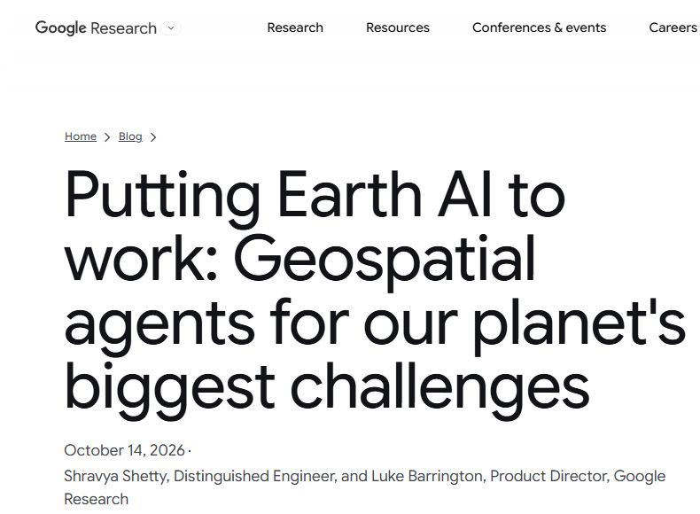

구글 AI, 지도와 위성 자료를 함께 분석한다
구글이 지도·위성사진·날씨·인구 자료를 함께 살펴 지역의 위험과 입지 조건을 분석하는 Earth AI의 시험 서비스를 확대했다. 10월 14일 공개한 내용은 지도를 보며 답하는 챗봇에서 한발 더 나아간다. AI가 필요한 자료와 분석 순서를 고르고, 계산한 결과를 지도와 표로 보여주는 방식이다. 구글 발표

가상의 예로, 새 대피소를 만들 자리를 찾는 상황을 생각해 보자. 인구가 많은 곳만 고르면 침수 지역에 대피소를 지을 수 있다. 홍수 예상 범위, 도로, 기존 시설을 같은 지도 위에서 비교해야 한다. 이런 자료를 찾아 맞추는 준비 작업을 AI에 맡기려는 것이 이번 기술의 목적이다.
Earth AI는 하나의 거대한 지도 파일이 아니다. 위성영상, 기상, 홍수, 인구 변화를 다루는 여러 AI와 분석 도구를 묶은 이름이다. 그중 이번에 소개한 Geospatial Reasoning agent는 질문을 받아 도구를 선택하고 여러 단계의 분석을 진행한다. 어려운 이름을 풀면 ‘장소와 공간에 관한 문제를 푸는 AI 작업자’다.
질문을 받으면 먼저 분석 순서를 만든다
구글은 작업자가 무엇을 계산할지 먼저 계획한 다음, 필요한 자료를 불러와 처리하도록 설계했다. 거대한 지도 자료를 대화창에 전부 넣는 대신 별도 작업 공간에서 계산한다. 답변에는 사용한 자료와 계획을 남겨 전문가가 전제를 바꾸거나 오류를 찾을 수 있게 한다.
이 순서가 중요한 이유는 자료마다 시간과 공간의 기준이 다르기 때문이다. 올해 인구와 몇 년 전 위성사진을 섞거나, 시 전체 통계를 동네 수치로 착각하면 말은 자연스러워도 분석은 틀릴 수 있다. 장소의 범위, 관측 날짜, 계산 단위를 맞추는 과정이 답변의 핵심이다.
사용자가 가진 위치 목록이나 구역 경계를 추가하는 경로도 있다. 공식 시연 페이지에는 자료의 이용 조건 확인, 가뭄 예측, 직접 올린 표 활용, 입지 선정 등의 과정이 공개돼 있다. 우리가 새로 실행한 화면이 아니라 구글이 제공한 제품 시연이다. 공식 화면과 시연 영상 보기
Google Earth AI가 공개한 WHO AFRO 활용 설명. KIKUKE 자체 실습이 아님.

실제 시연에서는 자료를 고르는 과정까지 보인다
시연 모음의 ‘Data feasibility & Licensing’은 질문에 쓸 만한 자료가 있는지와 이용 조건을 함께 살피는 장면이다. ‘Bring your own data’는 사용자의 자료를 분석에 보태는 과정을, ‘Model performance evaluation’은 여러 예측 결과를 비교하는 과정을 보여준다. 완성된 지도 한 장보다 그 지도를 만드는 판단 과정이 중요하다.
영상으로 볼 때는 AI가 말한 결론만 따라 읽기보다, 어떤 자료를 골랐는지와 중간 결과를 함께 보는 편이 좋다. 예를 들어 특정 지역의 가뭄을 다룬다면 화면의 예측 기간과 대상 지역부터 읽는다. 시연에 등장한 조건이 우리 동네에도 그대로 적용되는지 판단하는 출발점이다.
실제 사례를 영상으로 보기
구글 발표가 연결한 WHO 아프리카 지역사무소의 활용 설명이다. 감염 위험을 살피는 데 지도·위성·인구 자료를 어떻게 보탰는지 소개한다. Google Earth AI 공식 설명 영상
평가는 ‘말솜씨’보다 도구 사용을 비교했다
연구진은 같은 모델에 어떤 도구를 붙였는지에 따라 결과를 비교했다. 모델만 쓴 경우, 검색 같은 기본 도구를 붙인 경우, Earth AI 도구를 붙인 경우, 도구와 사전 계획을 모두 사용한 경우다. 비교 모델은 Gemini 3.1 Pro와 3.8 Flash다. 이번 결과를 Gemini 4 Argon의 성능표로 옮기면 안 된다. 기술 보고서
복잡한 분석 절차를 평가한 GeoExpertQueries에서 3.8 Flash는 기본 도구를 붙였을 때 3.3점, Earth AI 도구를 붙였을 때 52.2점, 사전 계획까지 포함했을 때 62.7점을 얻었다. 세 번 실행한 평균이며 100점 만점이다. 이 점수는 실제 재난을 맞힌 비율이 아니라 전문가가 정한 분석 절차를 얼마나 충족했는지 평가한 값이다.
다른 과제에서는 계획을 추가한 결과가 도구만 붙인 결과보다 낮기도 했다. 연구가 보여주는 핵심은 ‘생각 단계를 늘리면 무조건 더 좋다’가 아니다. 어려운 공간 분석에 필요한 도구를 갖추는 효과가 컸고, 열린 질문을 풀 때에는 사전 계획이 추가로 도움이 됐다는 것이다.
공개된 시험 자료로 결과를 따져볼 수 있다
구글은 평가용 문제 일부와 채점 방법을 공개했다. 개발용 문제는 여러 도구를 조합하는 과제 85개와 전문가의 분석 절차를 따르는 과제 25개다. 별도의 최종 시험 문제는 학습 자료에 섞이는 것을 줄이기 위해 공개하지 않았다. 공개 평가 자료
이 공개 자료의 의미는 홍보 점수만 볼 필요가 줄었다는 데 있다. 개발자는 어떤 질문을 냈고, 답이나 분석 순서를 어떻게 평가했는지 읽을 수 있다. 공개 데이터와 코드의 허용 범위는 서로 다르며, 저장소에 포함된 일부 Google Maps 자료에는 별도 이용 조건이 붙는다.
한국에서 바로 쓰는 무료 지도 기능은 아니다
새로운 여러 단계 분석과 예측 기능은 제한된 초기 접근을 신청하는 방식이다. Google Earth 안에서 쓰는 경로와 개발자가 자기 서비스에 연결하는 경로도 구분돼 있다. 누구나 같은 기능을 바로 무료로 쓸 수 있다고 안내하기는 이르다.
현재 Ask Google Earth 문서는 웹·영어와 미국, 호주, 캐나다 등 일곱 지역의 프로젝트를 지원 범위로 적고 있다. 한국은 그 목록에 없다. 별도 파트너 시험에서 공개된 사례와 일반 이용자가 자기 계정에서 접근할 수 있는 범위를 구분해야 한다. 현재 이용 범위와 제한
같은 문서는 질문과 피드백을 사람이 검토할 수 있으므로 비밀 자료를 입력하지 말라고 안내한다. 기업용 연결 경로의 계약까지 이 화면과 같다고 볼 수는 없다. 실제 도입을 검토하는 조직이라면 사용 경로별 데이터 처리 조건과 지역 지원부터 확인하는 것이 순서다.
이 기술이 줄이려는 일은 지리 전문가의 최종 판단보다, 흩어진 자료를 찾고 계산을 준비하는 시간이다. 구글도 결과를 전문가가 검토하고 발전시킬 첫 초안으로 설명한다. 지도 위에 색이 깔끔하게 칠해졌더라도 주민의 안전이나 시설 투자는 원자료와 현장 정보까지 대조해 결정해야 한다.
Earth AI의 변화는 분명하다. 이제 지도 AI는 장소 이름을 답하는 데서 나아가 여러 자료를 연결해 분석 과정을 제시한다. 좋은 결과의 기준은 화려한 지도보다, 그 지도가 어떤 자료와 계산으로 만들어졌는지 사람이 확인할 수 있느냐에 있다.
출처와 더 읽을 자료
- Google Research 발표, 2026-10-14
- 기술 보고서와 표 4
- 공식 시연 모음
- Ask Google Earth 공식 사용 문서
- 공개 평가 자료와 라이선스
- Google Earth AI WHO 사례 영상
대표 이미지는 제품명과 기사의 핵심을 편집부가 배치한 설명용 표지이며 실제 제품 화면이 아니다. 본문의 원본 화면·영상은 각 자료 아래에 출처와 제공 주체를 표시했다. 직접 실습하지 않은 회사 시연을 편집부의 실행 결과로 표시하지 않았다.